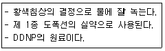
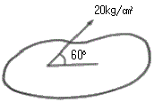
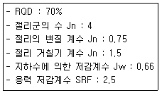
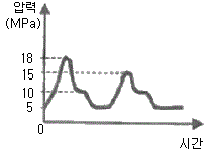
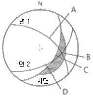

화약류관리기사 (2018-09-15 기출문제)
1과목: 일반화약학
1. H2SO4 60%, HNO3 32%, H2O 8% 조성의 혼산 100kg으로 톨루엔을 니트로화하여 TNT를 제조할 때 질산 32kg이 화학양론적으로 전부 톨루엔과 반응하였다면 DVS 값은?
- 1.5
- 2.5
- 3.5
- 4.5
(정답률: 69%)

2. 낙추감도에서 임계폭점의 의미를 가장 옳게 설명한 것은?
- 일정한 높이에서 10회 떨어뜨려 한 번도 폭발을 일으키지 않는 높이
- 화약시료가 폭발(50%)을 일으키는 데 필요한 평균 높이
- 일정한 높이에서 10회 떨어뜨려 10회 폭발할 때의 최소높이
- 일정한 높이에서 10회 떨어뜨려 10회 폭발할 때의 최대높이
(정답률: 88%)
3. 다음 중 맹도에 대한 설명으로 옳은 것은?
- 카드캡 시험맵으로 측정한다.
- 한 개의 약포가 폭발했을 때 다른 약포가 감응하여 폭발하는 현상을 말한다.
- 탄동진자 시험법으로 측정한다.
- 화약로가 폭발하여 최대의 압력을 나타낼 때의 시간의 기울기라고 할 수 있다.
(정답률: 83%)
4. 뇌관(deroeator)의 기폭약으로 주로 사용되는 것은?
- 질화납
- 니트로글리세린
- 2.4 디니트로클로로벤젠
- 흑색화약
(정답률: 90%)
5. 뇌관과 폭약포를 장축에 따라 일직선상에 놓고 뇌관의 폭굉에 의하여 폭약포와 감응순폭하는 최대 거리를 측정하는 시험은?
- 가트만 시험
- 강판시험
- 뇌관 감응시험
- 갱도 시험
(정답률: 83%)
6. 다음에서 설명하는 화약류는 무엇인가?

- 니트로 글리세린(NG)
- 트리니트로톨루엔(TNT)
- 테트릴(Tetryl)
- 피그린산(PA)
(정답률: 71%)
7. TNT의 원료로 적합하지 않은 것은?
- HNO3
- H2SO4
- C3H5(OH)3
- C6H5CH3
(정답률: 67%)
8. 질산암모늄 폭약의 예감제로 사용되는 것은?
- 질산
- 황
- 디니트로나프탈렌
- Al 분말
(정답률: 76%)
9. 니트로화합물 화약류 중 금속인 납, 철, 구리와 화합하여 민감한 금속염을 만드는 것은?
- C6H2CH3(NO2)3
- C6H3(NO2)3
- C6H2(NO2)3OH
- C5H6(NO2)2
(정답률: 50%)
10. 화약류가 폭발하면 고온과 함께 다량의 가스가 발생한다. 유독가스로 분류되지 않는 것은?
- CO2
- NO2
- SO2
- H2S
(정답률: 81%)
11. 다음 폭약 중에서 폭발 후 염화수소 가스를 생성하는 것은?
- 초안폭약
- TNT
- 카울릿
- 테트릴
(정답률: 89%)
12. 다음 중 공업용 뇌관의 성능시험법은?
- 폭속시험
- 갱도시험
- Dautliche 시험
- 납판시험
(정답률: 95%)
13. 저항 1.4Ω인 전기뇌관을 2직 5열로 발파하고자 한다. 보조모선의 총길이를 100m, 보조모선의 저항이 0.021Ω/m, 발파기 내부저항을 0으로 하고 발파시 소요전류를 2A로 한다면 발파에 필요한 소요 전압은 얼마인가?
- 4.76V
- 5.32V
- 26.6V
- 284.2V
(정답률: 75%)
14. 순폭의 의미를 옳게 설명한 것은?
- 자연적 분해에 의해 폭발하는 것
- 장시간 경과에 의해 폭발하는 것
- 화학 적용에 의해 폭발하는 것
- 감응에 의해 폭발하는 것
(정답률: 88%)
15. 가열에 의하여 산소를 내는 것으로 산소공급제에 해당하는 것은?
- 과염소산칼륨
- 칼륨
- 식영
- 탄화알루미늄
(정답률: 93%)
16. 다음 중 흑색화약을 제조할 때 edge runner(암마기)를 가동하는 가장 주목적에 해당하는 것은?
- 물 흡수
- 가비중 상승
- 혼화
- 작은 용기로 분해
(정답률: 84%)
17. 함수폭약의 성질에 대한 설명으로 틀린 것은?
- 충격 마찰에 대하여 다이너마이트 폭약보다 안전하다.
- 열 화염에 대하여 예민하다.
- 내부, 내습성이 양호하다.
- 후 가스는 다이너마이트 폭약보다 양호하다.
(정답률: 81%)
18. 흑색화약에 대한 설명으로 틀린 것은?
- 습기를 피하면 장기간 저장하여 사용이 가능하다.
- 발파 용기 중에서 폭굉을 하고 폭연을 하지 않는다.
- 도화선의 심약으로 사용된다.
- 화염, 마찰, 충격에 민감하다.
(정답률: 87%)
19. 뇌홈에 KCLO3를 혼합하는 목적과 관계가 깊은 것은?
- 발열량을 크게 하기 위해서
- 기폭제를 안정시키기 위해서
- 폭속을 증가시키기 위해서
- 발화점을 낮추기 위해서
(정답률: 68%)
20. 니트로글리세린 1kg을 밀폐상태에서 완전히 분해시켰을 때 가스는 표준상태를 기준으로 환산하면 몇 L인가?
- 115L
- 250L
- 615L
- 715L
(정답률: 86%)
2과목: 발파공학
21. 발화진동을 경감시키기 위한 방법으로 틀린 것은?
- 동적 파괴효과의 비율이 작고, 폭속이 낮은 폭약을 사용한다.
- 청공점에 대하여 약경을 작게 하여 충격파를 완화한다.
- 발파공을 모두 순발뇌관을 사용하여 제발발파한다.
- 폭속과 진동추진점 사이에 파동전파를 차단하는 조치를 취한다.
(정답률: 52%)
22. 주발파를 행하기 이전에 미리 점화하여 암반이 균열 주는 발파 방법은?
- smooth wall blasting
- cushion blasting
- beach blasting
- pre-splitting
(정답률: 54%)
23. 다음 중 계단식 발파에서 발파 비용에 가장 영향을 미치는 요소는?
- 비장약량, 운송비용
- 비장약량, 파쇄비용
- 비장약량, 비천공장
- 운송비용, 파쇄비용
(정답률: 54%)
24. 벤치 발파시 발파의 1열의 비식 방지대책으로 옳은 것은?
- 계단 높이 1/3 정도 자유면 앞에 먼저 파쇄된 암석을 남겨둔다.
- 가능한 한 과장약을 실시한다.
- 1열의 청공하부의 저항선은 각기 다르게하여 청공한다.
- 전회 발파 후 하부에 파쇄암을 남기지 말아야 한다.
(정답률: 46%)
25. 다음 중 비산의 방지대책으로 옳지 않은 것은?
- 가스가 발파공 상부로부터 새어 나올 때 쉽게 튀어나가지 않도록 느슨한 암괴를 치우고 작업장을 깨끗이 한다.
- 발파공벽과 마찰을 크게 하기 위해 천공분진을 이용하여 전색한다.
- 이완된 암반과 공극을 잘 조사하고 이완된 부분은 무장약공을 전색만 한다.
- 발파공이 정확한 경사로 청공되었는지 확인한다.
(정답률: 49%)
26. 다음 중 발파에 의해 발생되는 분진의 저감 대책 공법에 대한 설명으로 옳지 않은 것은?
- 커버설치법:발파공 주변에 마른 모래 등을 살포한 상태에서 발파를 실시한다.
- 분무법:고압분무로 미세한 수적을 만들어 분진에 충동시켜 부유하고 있는 미세한 분진을 침강시킨다.
- 살수법:분진발생을 억제하는 측면에서 직접 발생 부분에 수평살수식으로 물을 뿌려준다.
- 간접대책:방전시트나 분진 차단막 등의 방진벽을 설치한다.
(정답률: 45%)
27. 공경 38mm, 최소 저항선 1.0m 누두반경 1.0, 장악량 1kg로서 표준발파가 실시되었다면 이 때의 암석항력계수는 얼마인가? (단, 전색계수 및 폭약의 효력계수는 각각 1이다.)
- 1
- 2
- 38
- 48
(정답률: 39%)
28. 진동속도와 진동 Level은 이론적으로 주파수 8Hz 이상의 연속 정현진동에서 서로 변환이 가능하다. 진동속도가 0.3cm/s일 때 진동 Level은 약 몇 dB인가?
- 78.372
- 79.372
- 80.372
- 81.372
(정답률: 36%)
29. 파쇄암석은 다음 열의 파쇄시 비산에 한 방해물로 작용하는데 인접한 공간의 지발시간의 최소 몇 MS(millisecond)를 초과하는 방해물의 효과가 없어지는가?
- 100MS
- 120MS
- 140MS
- 160MS
(정답률: 37%)
30. 프리스플리딩 설계에 따른 설명 중 틀린 것은?
- 공간격은 철공경의 10~12배 정도로 한다.
- 연암(발파계수 0.17)으로 공간격 0.6m, 천공장 6m일 때 공당 장약량은 약 0.6kg/hole로 한다.
- 2개공 사이에서 발생하는 응력파가 겹치지 않고 서로 충돌하여 충돌부위에서 암석을 당겨 균열을 발생시킨다는 이론
- 전단공 주변의 방사성균ㅇ녈을 폭발가스 압력이 소진하면서 GAS 압력이 암석의 전당감도를 초과할 때 암석이 파쇄된다.
(정답률: 32%)
31. 건설현장에서 사용되는 직경 50mm, 중량 100kg, 길이 400mm의 산업용 폭약을 사용하여 장악하는 경우 단위 m당 장약량은 얼마인가?(오류 신고가 접수된 문제입니다. 반드시 정답과 해설을 확인하시기 바랍니다.)
- 1.5kg
- 2.5kg
- 3.0kg
- 3.5kg
(정답률: 45%)
32. 발파해체공법중 일반적으로 2~3열의 기둥을 가진 건물을 한쪽 방향으로 붕괴시키는 공법으로 전도와 동시에 붕괴가 발생하며 일방향 또는 이방향의 여유 공간이 있을 경우 적용 하는 공법은?
- 내파공법
- 상부붕락공법
- 전도공법
- 점진붕괴공법
(정답률: 46%)
33. Bench Blasting 중 Wide space blasting에 대한 설명으로 틀린 것은?
- 화약비, 천공비 등이 감소하여 경제성이 우수하다.
- 버럭의 압도가 적재되어 소할 및 적재, 운반비 등이 감소하여 파쇄 후 2차 비용이 감소한다.
- 제 1열의 경우는 천공간격과 저항선의 비를 1.25로 하여 비석의 위험을 방지한다.
- 천공간격과 저항선의 비를 최대 8로 하여 파쇄버럭의 입도를 작게 한다.
(정답률: 31%)
34. 천공장이 1.5cm인 발파공에 500g의 폭약을 장약한 누두공 시험발파 결과 지표면에서 직경이 2m인 암반 파쇄영역이 나타났다. 표준장약이 되게 하려면 약 얼마의 폭약을 장약 해야 하는가? (단, 누두지수 함수는 Dambrun식 사용)
- 300g
- 600g
- 800g
- 1000g
(정답률: 22%)
35. 압축강도가 25000kgf/cm2이고 인장강도가 80kgf/cm2인 신선한 암반에 선균열 발파를 실시하기 위하여 발파공을 천공하였다. 발파공내에 작용하는 압력이 1000kgf/cm2이라면 공간격은 얼마로 하여야 하는가? (단, 발파공경은 75mm이다.)
- 87cm
- 75cm
- 53cm
- 25cm
(정답률: 30%)
36. 발파위험구역 안의 통행을 막기 위해서 비치된 경계원에게 확인시켜여 할 사항으로 가장 거리가 먼 것은?
- 경계하는 위치
- 발파 횟수
- 대피하는 장소
- 발파완료 후 연락 방법
(정답률: 39%)
37. 팽창성 파쇄제를 사용하는 파쇄설계에 있어 청공간격 결정시 필요한 항목이 아닌 것은?
- 파쇄제의 압축강도
- 파쇄제의 종류
- 청공경
- 팽창압
(정답률: 42%)
38. 제발발파와 지발발파에 관한 설명으로 옳지 않은 것은?
- 장약공들의 폭발력을 서로 중복시켜 전체적인 파괴력을 증대시키는 효과를 얻으려면 제발 발파가 유력하다.
- 대발파의 경우 파쇄암석편의 비산에 의한 주변 가옥의 피해 우려가 있을 때는 시차가 짧은 MS 발파법이 유리하다.
- 다열 지발발파시 열 사이에 파쇄암의 팽창과 이동을 고려한 시차를 스키별 피리어드(skipping perixch)라 한다.
- 발파공간거리가 좁을 때 지발발파를 할 경우 컷오프, 사압현상이 발생할 수 있다.
(정답률: 45%)
39. 심빼기 번컷에서 무장약공경이 10cm 장약공경이 3.3cm일 때 장약공의 단위 길이당 장약량(kg/g)은? (단, Langefors식을 이용하고 무장약공과 장약공 중심간의 거리는 180mm이다.)
- 0.98
- 0.76
- 0.47
- 0.13
(정답률: 27%)
40. 충격하중의 특성에 대한 설명으로 틀린 것은?
- 충격하중의 하중이 순간적으로 극히 높은 유한치로 상승하였다가 그 후 급속히 감속되어가는 하중이다.
- 충격하중은 그 작용시간이 통상적으로 마이크로나 밀리 단위로 나타낼 정도의 것을 말한다.
- 충격하중은 그 작용하는 물체 내에 유발된 응력 분포는 일방적으로 과도적이며 극히 국한된다.
- 충격하중은 그 작용하는 물체내에 운동을 일으키지 않는다.
(정답률: 38%)
3과목: 암석역학
41. 다음 중 사면의 안전율을 증가시키기 위한 사면 보강공법이 아닌 것은?
- 피복공법
- 랄볼트 공법
- 경사완화공법
- 억지말뚝공법
(정답률: 40%)
42. 아래 그림과 같은 면상의 한 점에 면과 60°의 방향으로 20kg/cm2의 응력이 작용하고 있을 때 이점에서의 수직응력(㉠)과 전단응력(㉡)은?

- ㉠ 10√3 kg/cm2, ㉡ 10 kg/cm2
- ㉠ 10 kg/cm2, ㉡ 10√3 kg/cm2
- ㉠ 5√3 kg/cm2, ㉡ 5 kg/cm2
- ㉠ 5 kg/cm2, ㉡ 5√3 kg/cm2
(정답률: 35%)
43. 암반 내에 전파되는 종파(P파), 횡파(S)파 및 레일리파(R파)에 대한 설명으로 옳지 않은 것은?
- P파의 속도는 S파 속도보다 빠르다.
- R파는 암석의 내부를 통해 전파된다.
- P파는 입자의 운동방향이 파의 전파방향과 같다.
- S파는 입자의 운동방향이 파의 전파 방향과 수직이다.
(정답률: 52%)
44. 직경이 50mm인 암석 코어에 대하여 직경방향(원주상부)으로 점하중을 가한 결과 5ton에서 암석의 파괴가 일어났다면, 이 암석의 점하중 강도지수(Poing lead index)는?
- 100kg/cm2
- 200kg/cm2
- 250kg/cm2
- 400kg/cm2
(정답률: 34%)
45. 다음 암반구조물 설계를 위한 여러 가지 요소 중 암반의 변형계수를 구하는 방법이 아닌 것은?
- 공내재하시험
- 동적 반복시험
- 평판재하시험
- 원지반 일축압축시험
(정답률: 37%)
46. 다음 중 Hock-Brown에 의한 암석의 경험적 파괴 조건식은? (단, 기호는 보통 많이 사용하는 상례에 따른다.)
- σ1=σ3+/mσcσ3+sσc2
- τ2=τ02(1-σ/σ1)
- τ2=4σc(σ1-σ)
- τ=C0+σtanΦ
(정답률: 46%)
47. 암반분류를 위한 조사 결과가 보기와 같을 때 Q값은?

- 0.43
- 9.24
- 25.67
- 65.7
(정답률: 36%)
48. 암석의 일축 압축시험에 영향을 주는 요인에 대한 설명으로 옳은 것은?
- 하중속도가 증가함에 따라 강도가 감소한다.
- 시험편의 단면이 정사각형일 때가 원형일 때 보다 강도가 크다.
- 시험편의 길이 대 직경 비 (세장비)가 작을수록 강도가 증가한다.
- 시험편의 크기가 커질수록 지지할 수 있는 하중이 증가하므로 강도가 증가한다.
(정답률: 42%)
49. 다음 중 완전 탄성체의 성질이 아닌 것은?
- 응력과 변형률은 선형관계를 이룬다.
- 영률은 측정방향에 상관없이 일정하다.
- 일정한 응력이 가해질 때 발생하는 변형량이 시간에 비례한다.
- 힘을 가해였다가 제거하면 본래의 변위(형태)로 되돌아온다.
(정답률: 44%)
50. 단면적이 같은 동일 암석시험관 중에서 단축 암석시험관중에서 단축압축강도가 가장 큰 것은?
- 원형단면
- 삼각형단면
- 사각형단면
- 육각형단면
(정답률: 58%)
51. 수리전도도(Hydraulic conductivity)에 대한 설명으로 옳지 않은 것은?
- 암반의 유체 통과 능력을 나타낸다.
- 수리전도도는 속도의 단위를 갖는다.
- 단위시간동안 암반을 통과한 유량에 비례한다.
- 유체가 통과하는 매질의 특성(공극률, 결정입자의 형상 등)과는 관계가 없다.
(정답률: 49%)
52. 암반 불연속면의 특성을 평가하는 실내시험 중 시편을 기울여 내부마찰각을 평하는 시험은?
- 틴트시험
- 일축압축 시험
- 직접인장 시험
- 절리면 거칠기 시험
(정답률: 45%)
53. 지하공간을 암반공학적 및 경계적 측면에 맞게 시공할 때 일반적으로 심도가 깊은 순서대로 올바르게 나열된 것은?
- 핵폐기물 처리 시설-LPG 저장시설-지열에너지 개발시설-폐수처리장
- 핵폐기물 처리 시설-지역에너지 개발시설-폐수처리장-LPG 저장시설
- 지열에너지 개발시설-핵폐기물 처리 시설-LPG 저장시설-폐수처리장
- 지열에너지 개발시설-핵폐기물 처리 시설-폐수처리장-LPG 저장시설
(정답률: 34%)
54. 다음 중 불연속면이 발달한 암반의 강도를 추정하는데 가장 적합한 식(이론)은?
- Griffith 파괴이론
- Drucker-prager 이론
- Hoek-Brown 파괴식
- Mohr-Coulomb 파괴식
(정답률: 31%)
55. GSI(Geological Strength Index)를 신청하기 위해 RMR(Rock Rating)를 적용할 경우 일반에 대한 기본가정으로 옳은 것은?
- RQD는 50% 이하이다.
- 절리간격은 100mm이하이다.
- 암반은 완전히 건조하는 상태이다.
- 절 리가 매우 불리한 방향으로 발달되어 있다.
(정답률: 48%)
56. 응력-층변형률 곡선상에서 응력을 계산하는 방법 중 할선 영률(socant Young's modulus)은?
- 탄성 거동을 나타내는 일축 압축강도의 50% 응력 수준에서 접선을 그은 기울기로 산정
- 응력-측변형률 곡선 상에서 직선 구간의 평균기울기로 산정
- 원점에서부터 일축압축강도의 50% 응력 수준에서 직선을 그러 전체 기울기로 산정
- 원점에서부터 일축압축강도의 95% 응력 수준에서 직선을 그어 전체 기울기로 산정
(정답률: 42%)
57. 암석의 일축압축하중 하의 거동에 관한 설명으로 옳은 것은?
- 암석이 연성(ductile) 일수록 변형률 연화(strain softening)형상이 뚜렷이 나타난다.
- 암석이 소성변형을 따르지 않고 강도의 갑작스런 소실이 발생하는 거동을 취성파괴라 한다.
- 암석의 공극에 물이 포함된 경우는 일반적으로 유효응력의 감소로 인해 암석의 강도가 크게 나타난다.
- 시료의 강성이 하중기의 강성보다 큰 경우에는 반대의 경우에 비해 파괴후 응력-변형률-변화를 관찰하기 용이하다.
(정답률: 48%)
58. 공내 팽창계(borehole dilatoneter)를 이용하여 직경 8cm의 시추공에 대해 현지 변형시험을 실시한 결과 10MPa의 압력 변화에서 시추공반경 증가량이 0.004cm일 때 암반의 변형계수는? (단, 암반의 포아송비는 0.2이다.)
- 6 GPa
- 12GPa
- 24GPa
- 36GPa
(정답률: 38%)
59. 다음 중 응력과 변형률에 대한 설명으로 옳지 않은 것은?
- Mohr원에서 주응력을 구할 수 있다.
- 주응력면에서는 전단응력이 0이 된다.
- 수직응력만이 수직변형률 발생에 영향을 미친다.
- 평면변형률 조건에서 평면과 수직한 방향으로의 수직응력은 0이다.
(정답률: 30%)
60. 절리면 전단시험 시 시험판의 전단거동 특성에 대한 설명으로 옳지 않은 것은?
- 절리면의 최대 마찰각은 보통 잔류 마찰각보다 크다.
- 절리면의 거칠기 정도가 클수록 전단강도는 커진다.
- 절리면이 분리되어 있는 경우 접착력은 0에 가깝다.
- 절리면에 작용하는 범선응력이 클수록 전단강도는 작아진다.
(정답률: 41%)
4과목: 화약류 안전관리 관계 법규
61. 다음 중 허가를 받지 아니하고 제조할 수 있는 화약류의 수량으로 옳은 것은? (단, 학교+연구소 등 공인된 기관에서 물리+화학상의 실험목적으로 사용하기 위한 것이며, 꽃불류의 원료용임)
- 화약 1회 600g 이하
- 폭약 1회 400g 이하
- 신호화전 1회 600g 이하
- 신호염관 1회 1000g 이하
(정답률: 41%)
62. 국가기술자격법에 의하여 화약류관리분야의 국가기술자격을 취득한 사람이 화약류관리보안책임자의 면허를 받고자 할 때에는 어느 관청장에서 면허신청서를 제출하여야 하는가?
- 행정안전부 장관
- 지방경찰청장
- 한국산업인력공단 이사장
- 관할경찰서장
(정답률: 48%)
63. 다음 중 화공품에 해당하지 않는 것은?
- 신호염관
- 실탄 및 공포탄
- 시동약
- 뇌홍 등의 기폭제
(정답률: 54%)
64. 화약류 저장소에서 화약류(도화선 및 전기도화선, 신호염관, 신호화전 또는 꽃불류제외)를 저장하는 경우의 저장방법 및 취급방법 중 틀린 것은?
- 저장소에서 화약류를 출고하고자 하는 때는 저장기간이 짧은 것부터 먼저 출고할 것
- 화약류를 담은 상자를 쌓아 올릴 때 높이는 1.8m 이하로 할 것
- 저장소 안에서는 물건을 포장하거나 상자의 뚜껑을 여는 등의 작업을 하지 아니할 것
- 저장소에 제조일로부터 1년이상 경과한 화약류가 남아있는 경우 그 이상유무에 특히 유의할 것
(정답률: 55%)
65. 다음 중 폭약 1톤으로 환산되는 화약류의 수량으로 맞는 것은?
- 실탄 또는 공포탄 200만개
- 신관 또는 화관 10만개
- 신호뇌관 20만개
- 미진동 파쇄기 10만개
(정답률: 52%)
66. 화약류 발파의 기술상의 기준에서 정한 화약류 관리보안책임자의 수행 직무로 가장 거리가 먼 것은?
- 발파 현장의 작업 보조자를 정한다.
- 발파시 경계업무를 수행한다.
- 청공방법을 지시한다.
- 약실에 대한 화약류의 장전방법을 지시한다.
(정답률: 55%)
67. 2급 저장소의 화약류 최대 저장량으로 옳은 것은?
- 폭약 20톤
- 도폭선 : 100km
- 실탄 및 공포탄:2000만개
- 미진동파쇄기:400만개
(정답률: 40%)
68. 수중저장소에 화약류를 저장하는 경우 저장방법 및 취급방법에 해당하지 않는 것은?
- 가루로 된 화약류는 15퍼센트 정도의 물기를 머금게 한 후 물이스며들 수 없게 포장을 하여 나무상자에 넣을 것
- 저장소 내부는 환기에 유의하여 무연화약 또는 다이너마이트를 저장하는 경우는 온도계를 비치할 것
- 덩어리화약류는 물에 항상 잠긴 상태로 저장할 것
- 화약류는 수면으로부터 수심 50센티미터 이상의 물속에 저장할 것
(정답률: 43%)
69. 다음 중 제3종 보안물건에 해당하지 않는 것은?
- 선박의 항로
- 변전소
- 고압전선
- 고압가스저장시설
(정답률: 55%)
70. 화약류관리보안책임자 면허를 반드시 취소해야 하는 경우에 해당하는 것은?
- 화약류를 취급하면서 고의 또는 중대한 과실로 폭발 등의 사고를 일으켜 사람을 죽거나 다치게 한 경우
- 거짓이나 그 밖의 옳지 못한 방법으로 면허를 받은 사실이 드러난 경우
- 퐁초, 도검, 화약류들의 안전관리에 관한 법률에 따른 명령을 위반한 경우
- 공공의 안녕질서를 해칠 우려가 있다고 믿을 만한 상당한 이유가 있는 경우
(정답률: 56%)
71. 화약류와 관련된 허가원자로 옳지 않은 것은?
- 화약류 판매업 허가-경찰청장
- 폭약의 제조업 허가-경창청장
- 1급 저장소 설치 허가-지방경찰청장
- 간이 저장소 설치 허가-경찰서장
(정답률: 39%)
72. 다음 중 꽃불류 외 화약류의 사용허가신청의 경우 허가신청서에 첨부하여야 하는 서류는?
- 사용순서대장
- 사용장소 및 그 부근 약도
- 사용책임자 및 작업자의 이력서
- 사용계획서
(정답률: 52%)
73. 다음 중 과태료 부과사유에 해당하는 것은?
- 화약류를 허가 받은 용도외 사용한 사람
- 화약류 제조 관리보안책임자가 대통령이 정하는 안전상의 감독업무 불이행
- 거짓이나 그 밖의 옳지 못한 방법으로 총포, 도검, 화약류 등의 안전관리에 관한 법률에 의한 허가나 면허를 받은 사람
- 화약류를 폐기하고자 하는 자가 폐기하려는 곳을 관할하는 경찰서장에게 신고하지 않은 때
(정답률: 45%)
74. 화약류 폐기의 기술상의 기준으로 틀린 것은?
- 열어 굳어진 다이너마니트는 300g 이하의 적은 양으로 나누어 순차적으로 폭발처리한다.
- 화약 또는 폭약을 조금씩 폭발 또는 연소시킨다.
- 도화선은 연소처리하거나 물에 적셔서 분해 처리한다.
- 도폭선은 공업용뇌관 또는 전기뇌관으로 폭발처리한다.
(정답률: 45%)
75. 전기뇌관 400만개를 폭약량으로 환산하면 얼마인가?
- 40톤
- 8톤
- 4톤
- 1톤
(정답률: 58%)
76. 화약류를 운반하려는 사람은 누구에게 신고를 하여야 하는가? (단, 원칙적인 겨웅에 한한다.)
- 사용지 관할 경찰서장
- 발송지 관할 경찰서장
- 주소지 관할 경찰서장
- 도착지 관할 지방경찰서장
(정답률: 49%)
77. 화약류를 취급방법에 대한 설명으로 옳지 않은 것은?
- 얼어서 굳어진 다이너마이트는 50도 이하의 온도가 유지되는 실내에서 누그러뜨린다.
- 화약, 폭약과 화공품은 각각 다른 용기에 넣어 취급한다.
- 사용하다가 남은 화약류 또는 사용에 적합하지 아니한 화약류는 화약류 저장소에 반납한다.
- 전기 뇌관의 도통시험 또는 저항시험 시 시험전류는 0.01A를 초과해서는 안된다.
(정답률: 58%)
78. 응급조치 등의 방법 중 올바른 것은?
- 응급조치를 취할 사유가 발생시는 경찰관서에 신고 후 지시에 따른다.
- 화약류를 이전 할 여유가 없는 경우에는 즉시 소각처리한다.
- 화약류를 안전한 지역에 이전한 경우에는 경찰관을 배치한다.
- 화약류가 변질되어 현저하게 안정도에 이상이 있다가 인정될 경우에는 폐기한다.
(정답률: 49%)
79. 화약류 안정도 시험의 시험기 등의 설명으로 틀린 것은?
- 내열시험기는 내열시험용 시험관 및 탕전기로 할 것
- 가열시험기는 청량별 및 청량시험기로 할 것
- 청색리트머스시험지는 가로 20밀리미터 세로 30밀리미터의 것으로 할 것
- 청색 리트머스시험지 아이오단화칼류 녹말종이, 정체활색물 및 표준색지는 행정안전부장관이 지정하는 연구소 등에서 시행하는 검정시험에 합격한 것으로 할 것
(정답률: 57%)
80. 다음 중 화약류에 있어서 불발된 장약에 대한 조치로 틀린 것은?
- 불발된 발파공에 압축공기를 넣어 메지를 품어내거나 뇌관에 영향을 미치지 아니하게 하면서 조금씩 장전하고 다시 점화할 것
- 지정된 방법에 의하여 불발된 화약류를 회수 할 수 없을 때에는 그 장소에 적당한 표시를 한 후 화약류 관리보안 책임자의 지시를 받을 것
- 불발된 청공된 구명에 고무호스로 물을 주입하고 그 물의 힘으로 메지와 화약류를 흘러나오게 하여 불발된 화약류를 회수 할 것
- 점화 후 5분 이상(전기발파에 있어서는 다시 점화가 되지 아니하도록 한 후 15분이상)을 경과한 후에 아니면 화약류를 장전한 곳에 사람의 출입이나 접근을 금지시킬 것
(정답률: 45%)
5과목: 굴착공학
81. 하천 하역 등 수저에 터널을 설치하는 경우에 이용하는 침매공법의 특징으로 옳지 않은 것은?
- 터널의 토피는 최소로 할 수 있어서 터널 접근 램프가 짧아져서 경제적이다.
- 터널단면을 용도와 목적에 따라서 자유롭고 유효한 크기와 모양으로 설계할 수 있다.
- 에인, 침설, 굴착 등 기계 설비를 대형화 하여 대단면 터널도 안전하고 신속하게 시공할 수 있다.
- 터널 함체 제작과 현장 작업이 동일 장소에서 동시에 이루어지므로 공기를 단축할 수 있다.
(정답률: 39%)
82. 다음 그림에서 주어진 수압파쇄 시험 결과로부터 계산한 최대 수평출력(σN)과 최소 수평 응력(σL) 값으로 옳은 것은?

- σN=12MPa, σL=3MPa
- σN=12MPa, σL=5MPa
- σN=15MPa, σL=5MPa
- σN=15MPa, σL=10MPa
(정답률: 35%)
83. 직경 5m의 원형터널 내벽에 두께 4cm의 숏크리트를 타설할 경우, 이 숏크리트가 바휘할 수 있는 최대 지보압(maximum support pressure)은? (단, 숏크리트의 일축압축강도는 20MPa이다.)
- 0.12MPa
- 0.24MPa
- 0.32MPa
- 0.48MPa
(정답률: 24%)
84. 경사가 40°인 건조 경사면 위에 안반 블록이 놓여 있고 블록과 경사면 간의 점착력이 0인 경우, 한계평형조건에서 블록 바닥면의 마찰각은?
- 0°
- 20°
- 40°
- 60°
(정답률: 49%)
85. 록볼트에 대한 설명으로 옳지 않은 것은?
- 원지반의 개량효과가 있다.
- 마찰형, 접착형 등의 종류가 있다.
- 터널벽에 경사 방향으로 설치해야 한다.
- 매달림 효과, 마찰효과, 결합효과가 있다.
(정답률: 37%)
86. Baeton의 전단강도를 계산하기 위하여 필요한 자료가 아닌 것은?
- 절리면의 압축강도(JCS)
- 절리면의 기본 마찰각(Φb)
- 절리면의 거칠기 계수(JRC)
- 절리면에 작용하는 전단응력
(정답률: 34%)
87. 다음 중 터널 굴착(발파) 직후 무지보 상태의 붕괴 유형이 아닌 것은?
- 전단 파괴(Shear failure)
- 막장부 파괴(Face failure)
- 천장부 파괴(Crown failure)
- 연약대 파괴(Weakness strata failure)
(정답률: 48%)
88. 암석 강도에 대한 일반적인 내용으로 옳은 것은?
- 함수율이 크면 강도가 작다.
- 공극률이 크면 강도가 크다.
- 석영함유율이 크면 강도가 작다.
- 균열이 있는 암석은 강도가 크다.
(정답률: 41%)
89. 터널 갱문 형식 중 갱구가 불가피하게 편도압 지형에 위치하거나 골짜기 진입식의 지형에 위치 시 적합한 갱문형식은?
- 버드박형
- 아치면벽형
- 원동절개형
- 벨마우스 변형형
(정답률: 45%)
90. 다음 그림과 같이 스테레오(stereo) 투영법을 이용하여 암반사면의 불연속면을 나타냈었다. 음영표시 부분은 Daylight envelope을 나타낸 것이다. 파괴 활동 방향은?

- A
- B
- C
- D
(정답률: 45%)
91. 암반층을 통과하는 도수터널의 경제성 분석을 NATM을 대체하여 Open-TBM으로 시공하고자 할 때 터널 계획 시 고려사항이 아닌 것은?
- 암반 조건을 평가하여 지보 종류 및 지보량 결정
- 암반 강도 평가 후 압쇄식 또는 절삭식 굴착방식 결정
- 터널 연장 및 결제성을 고려한 버럭 운반 시스템 결정
- TBM 본체의 추진을 위해 세그먼트 버럭 추진책 용량 결정
(정답률: 24%)
92. 정수압하의 탄성암반 내 심도 100m 지점에 반경 3m인 원형터널을 굴착할 경우 터널 벽면에서 반경방향으로 발생하는 변위는? (단, 주변안반의 단위 중량은 2.7g/cm3, 영률은 105kg/cm2, 포아송비는 0.25이다.)
- 1.0mm
- 1.5mm
- 2.7mm
- 2.5mm
(정답률: 9%)
93. 다음의 화성암 중 심성암에 해당하지 않는 것은?
- 감람암
- 반려암
- 섬장암
- 안산암
(정답률: 37%)
94. 다음 중 초기지압(1차 지압) 측정법과 가장 거리가 먼 것은?
- Flat jack법
- Overcoring법
- 수압파쇄시험법
- Goodman jack법
(정답률: 40%)
95. 다음 중 지하 양수발전소, 유류 및 액화가스의 비축 등으로 쓰이는 암반 내 공동의 안전성에 영향을 미치는 요소로 가장 관련이 적은 것은?
- 공동의 용도
- 공동의 크기
- 공동의 형상
- 공동 사이의 상호거리
(정답률: 32%)
96. 터널 굴착의 각 단계별 조사항목 중 계획 단계에 속하지 않는 것은?
- 실시설계검토
- 굴착방식, 공법의 검토
- 단면, 지보공의 설계 검토
- 보조공법, 특수공법의 검토
(정답률: 46%)
97. 다음 중 터널의 용수와 관련된 문제점으로 옳지 않은 것은?
- 난반
- 토압감소
- 지층의 유출
- 막장의 자립성저하
(정답률: 20%)
98. 암반사면의 전도파괴(Toppling)발생 조건에서 전도영역에 속하는 것은? (단, 사면경사각은 σ, 블록 사면과 사면과의 마찰각은 Φ, 블록의 폭은 b, 블록의 높이는 h이다.)
- σ＜Φb/h＞tanσ
- σ＞Φb/h＞tanσ
- σ＜Φb/h＜tanσ
- σ＞Φb/h＜tanσ
(정답률: 34%)
99. 연약한 점토지반(내부 마찰각 0°)의 단위중량은 1.6t/m3, 점착력은 2t/m3이다. 이지반을 연직으로 2m 굴착할 때 연직사면의 안전율은?
- 2.0
- 2.5
- 3.0
- 3.5
(정답률: 40%)
100. 지하 유류저장 공동에 관한 설명으로 옳지 않은 것은?
- 기름이 물보다 가볍고 서로 섞이지 않는다는 원리를 이용하여 지하수면 아래에 설치한다.
- 지하수압에 의한 유류의 누출을 막기 위해서 저장 공동 상부에 수벽터널을 설치하기도 한다.
- 지하수위의 정수압을 저장유착의 기화압력보다 낮게 유지시킴으로써 유류가 공동밖으로 새어나가는 것을 방지한다.
- 지하저장방식으로 육상저장방식에 비하여 대규모 저장이 가능하고 시설이 반영구적이므로 투자비, 운영유지비가 저렴하다.
(정답률: 37%)
질산 32kg은 HNO3의 32/63.01 = 0.507 몰이다. 이것이 모두 톨루엔과 반응하여 TNT를 생성하면, TNT의 몰은 0.507 몰이 된다.
TNT의 몰은 톨루엔의 몰과 같으므로, 톨루엔의 몰은 0.507 몰이 된다.
톨루엔의 몰은 100kg 중 TNT의 몰인 0.507 몰을 제외한 나머지 몰로 계산할 수 있다. 이는 (100kg - 0.507 mol * 227.14 g/mol) / 92.14 g/mol = 107.3 몰이다.
따라서 DVS 값은 (0.507 mol / (0.507 mol + 107.3 mol)) * 100% = 0.47% 이다. 이는 3.5에 가깝다.